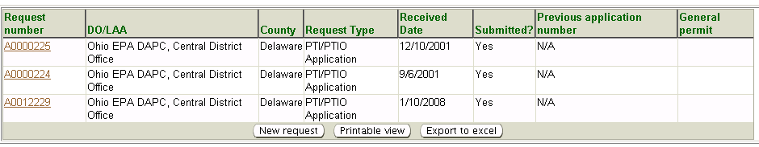
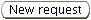
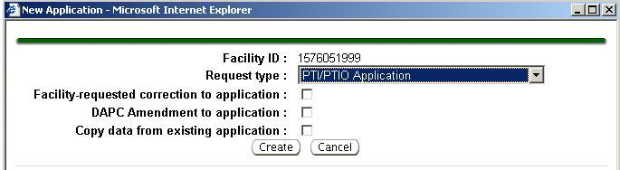
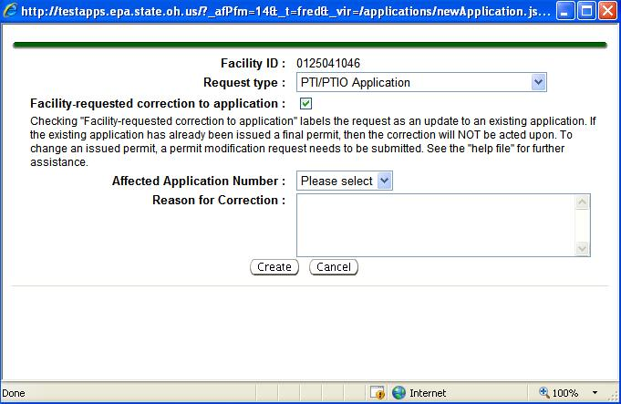
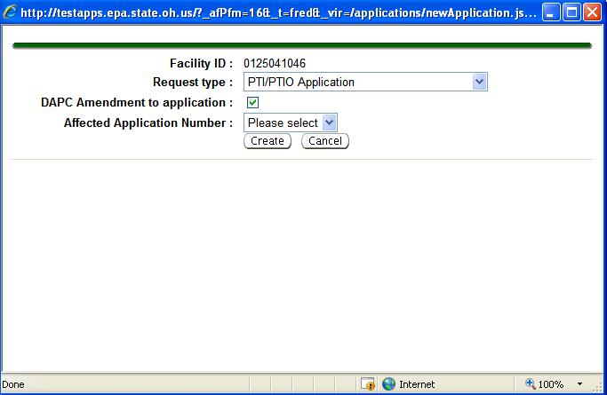
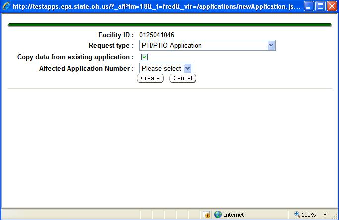
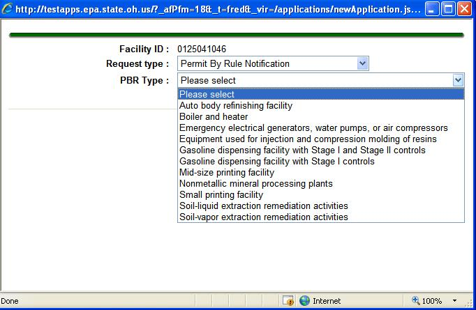
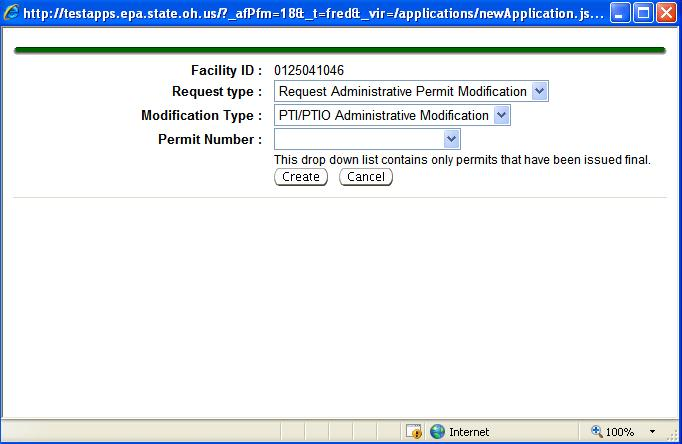
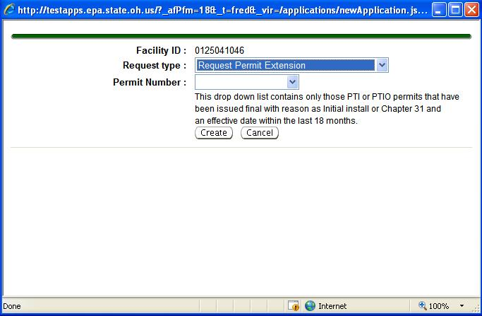
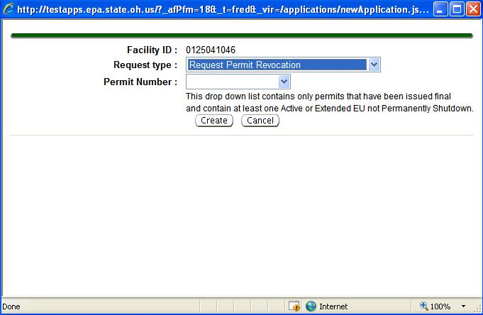

The third-level menu, Application(s),
of
the Facility
Profile
page gives you the ability to see all the applications a facility has
submitted, as well as the ability to enter and submit a New Request
for
an application when a facility has submitted a hard copy application or
request. If your facility has electronically submitted applications
externally or if
you have entered a New
Request for an application then they will be
displayed in a datagrid with hyperlinks for viewing the specific
application(s).
The following fields are viewable from the
Application(s)
datagrid:

Request
number: the application number assigned to the
application,
displayed as a hyperlink for accessing the Application Detail
page.
DO/LAA:
the name of the office assigned the application.
County:
location of the facility submitting the application.
Request
Type: indicates the type of application being
submitted.
Received
Date: indicates the date the application was
received by the
DO/LAA, whether submitted electronically by the applicant or entered as
a New Request
for a hard copy application.
Submitted?:
indicates Yes
or No
for submittal.
Previous
application number: will identify a request number
if another
application exists for the emissions unit(s); for example if a
corrected copy application is being submitted.
General
Permit: will identify the type (e.g., Boilers)
if
the application is for an emissions unit requesting coverage under a General
Permit.
To view a specific application, click on the Request number
hyperlink
in the row of the application you would like to view. The Application
Detail page will open. If the application has been
submitted to the
system it will be in read-only mode, but if the application has not
been submitted (i.e., hard copy applications in the process of being
entered by DO/LAA staff), it will open and be editable.
The list of
applications is printable by clicking
at the bottom of the datagrid.
The list may also be sent to an Excel spreadsheet by clicking .
If an application (or request) was submitted
by an applicant via hard copy, DO/LAA staff will begin entry of the
application electronically by clicking 
. The hard copy option is
available for all types of applications, except Title V applications.
All Title V facilities and FEPTIO sources are required to submit PTI,
Title V and PTIO applicationselectronically.
This is the first step in application entry. Once
created, the application appears in the Application Detail
page where
you will continue entry of the application. This Help page only
discussed the initial creation of the application. Please refer to the
Application
Detail Help page for additional help on continuing the
entry and submittal process.
If you receive a request to change some
aspect of a previously submitted PTI or PTIO application you must enter
the request by submitting a Facility-requested
correction to
application or if the change is an internal request,
submit a AQD
Amendment to application. This is discussed below under
the “PTI/PTIO
Application” heading. See the help below and continue at the
Application
tab (first level menu) for help. As a general rule you may
not make changes to the applications that have been submitted without
choosing one of the two aforementioned requests.
After clicking the following pop-up will appear
where you will select a Request
Type from
the picklist.
Once selected allows you to create and submit a PTI/PTIO
Application. You will notice three possible check boxes as
follows:

Selecting one of these check boxes will allow you to perform the
specified feature as discussed below. If you do not select one of the
boxes and click
, a blank application will be generated.
Facility-requested
correction to application: if selected, you must
select the Affected
Application Number from a picklist, which is the
application to be corrected, then you should enter a Reason for
Correction in the text box and click .IMPORTANT:
submitting a corrected application does NOT initiate a new Permit
Detail
page or workflow. A ToDos
list item will be generated and a correspondingApplication
Detail
page
for the original application. It will
be necessary for you to incorporate the application number for a
corrected application into the
Permit Detail page. Please refer to
the Permit
Detail Help
page.

Note: Please see the note
in pop-up for correction limitations.
AQD
Amendment to application: if selected, you must select the
Affected
Application
Number from a picklist, which is the application
to be amended, and click . IMPORTANT: submitting
an amended application does NOT initiate a new Permit
Detail
page or workflow. A ToDos
list item will be generated and a correspondingApplication
Detail
page. It will be necessary for you to incorporate the
application number for a amended application into the
Permit Detail page for the original
application. Please refer to the Permit
Detail Help
page.

Note: The application to be
amended must have
already been previously submitted.
Copy
data from existing application: if selected, you must
select the Affected
Application Number from a picklist, which is the
application
that you wish to copy data from, and click .
This is useful for giving
you a starting point on application entry based on the previous
applications applicable requirements.

If you chose the wrong PTI/PTIO
Application check box, you may unclick
the check box or click
to abort the process.
Once created, the application appears in the Application Detail
page
where you will continue entry of the application. Please refer to the Application
Detail Help page for additional help on continuing the
entry and submittal process.
This choice allows you to create and submit a permit-by-rule (PBR)
notification.
You will select a PBR
Type from the picklist based on the type
identified in the hardcopy notification you received and click .

Once created, the notification appears in the Application Detail
page
where you will continue entry of the application. Please refer to the Application
Detail Help page for additional help on continuing the
entry and submittal process.
This choice allows you to
request a PTI/PTIO
Administrative Modification, Title V
Administrative
Permit Amendment, or a Title V Off-Permit
Change. Select the Modification
Type from the picklist, then choose the Permit Number
from
the picklist you wish to modify. Click .

Note: An Administrative
Modification is performed for a permit that has already been issued.
Once created, the notification appears in the Application Detail
page
where you will continue entry of the application. Please refer to the Application
Detail Help page for additional help on continuing the
entry and submittal process.
Once chosen it allows you to request an
extension to a permit to extend the installation portion of an issued
PTI or PTIO past the statutory deadline date of 18 months for
construction to begin. If the extension is not applied for or granted
prior to the 18 month mark, the PTI or PTIO expires and a new PTI or
PTIO must be applied for and obtained before construction can begin.
Select the Permit
Number from the picklist you wish to make an
extension for and click .

Note: Please see the note in
the pop-up for
extension limitations.
Once created, the notification appears in the Application Detail
page
where you will continue entry of the application. Please refer to the Application
Detail Help page for additional help on continuing the
entry and submittal process.
This choice allows you to request a revocation of a partial permit for
a specific emissions unit(s) or an entire permit. Select the Permit
Number from the picklist that contains the emissions
unit(s) or the
entire permit from the picklist you wish to revoke and click .

Note: Please see the note in
the pop-up for revocation limitations.
Once created, the notification appears in the Application Detail
page
where you will continue entry of the application. Please refer to the Application
Detail Help page for additional help on continuing the
entry and submittal process.
The system supports intent to relocate (ITR) requests for only
portable sources.
There are three types of requests: Intent
to relocate to site not pre-approved, Relocate
to pre-approved site, and Site
pre-approved (for first gaining pre-approval to be able to
use the Relocate
to pre-approved site option). To enter a hard copy ITR
request, you will select from three appropriate options:
Intent
to relocate to site not pre-approved
is used for any portable facility that has not had a site pre-approved
and the ITR must be submitted by the company 30 days prior to
the
date of the proposed relocation.
Relocate
to pre-approved site is used for any
portable facility that has undergone pre-approval for a particular
site. They may relocate to the new lcoation after the site
pre-approval process has been completed. The ITR only needs
to be
received 15 days prior to the date of the proposed relocation and does
not need to be public noticed (because it has already been public
noticed during the pre-approval process.) When
the DO/LAA receives a Relocate
to a pre-approved site notice, they will complete this
electronic request form confirming that pre-approval did occur by
searching for a Site
pre-approved notice in the system or in the
facility's hardcopy files.
Site
pre-approved
is used by the facility to gain the pre-approval in order to use the
second option. When the DO/LAA receives a pre-approval
notice,
they will complete this electronic request form which will initiate the
workflow resulting in the public notice process.
Once
the appropriate request type is decided and selected from the picklist,
the following pop-up will appear (the same pop-up appears for each
type):
Date
Request
Received: The date according to the
date the request was “date
stamped” into the office.
ITR
Form Complete: This checkbox is selected, if
after review of the ITR from the requester, it is determined to be
complete.
Facility
Compliant: This checkbox is selected upon determination
that the facility is in compliance with its permit(s).
JFO
Recommendation:
The Jurisdiction Field Office (JFO) is the DO/LAA in the with
jurisdiction of the the relocated site. Selected from a picklist; Approve,
Approve
with Conditions, or Deny.
If Approve
with Conditions is selected, additional information will
be entered in the text box discussed below.
Request
Disposition: Selected from a picklist; Approved,
Approved
conditionally, Denied,
Notification
Received, or Returned.
Notification
Received should
ONLY be used when
Relocate to pre-approved site is the
type of notification being entered
and it is confirmed that a site was pre-approved. IF the site
has
not been pre-approved and you received a 15-day notice to relocate to
pre-approved site, you should still enter the request but select Returned
and return it to the requestor.
Future
Address: The address where the source will be relocated.
If more than one address is being requested for pre-approval, enter all
here.
Target
County:
The county where the source will be relocated. If there is
more
than one address request that covers more than one county, select one
county here and identify the other applicable county(s) in the Future
Address box.
Once
you have selected and entered the appropriate information
click ,
or click
to abort the process without generating the
notificaiton. Once created, the notification appears in the Application Detail
page
where you will continue entry of the application. Please refer to the Application
Detail Help page for additional help on continuing the
entry and submittal process.
 at the bottom of the datagrid.
The list may also be sent to an Excel spreadsheet by clicking
at the bottom of the datagrid.
The list may also be sent to an Excel spreadsheet by clicking  .
.  , a blank application will be generated.
, a blank application will be generated. to abort the process.
to abort the process.